Bölüm 8 Ölçülebilir Değişkenler için Kontrol Diyagramları
8.1 Tekil Ölçümler için I ve MR (Individual-Moving Range) Kontrol Diyagramları
I ve MR (hareket aralığı) diyagramları, ölçülebilir değişkenler için verinin tekil gözlemler halinde toplandığı durumlarda kullanılmaktadır. Bu durumların bazı örnekleri aşağıdaki gibidir:
- Veriler nispeten yavaş bir şekilde elde edilir ve analizden önce \(n>1\) örnek boyutlarının birikmesine izin vermek zahmetlidir. Gözlemler arasındaki uzun aralık, alt gruplamayla ilgili sorunlara neden olacaktır. Bu, hem imalat hem de imalat dışı durumlarda sıklıkla meydana gelir.
Tekil ölçümler için kontrol diyagramlarının birçok uygulamasında, işlem değişkenliğini tahmin etmenin temeli olarak iki ardışık gözlem hareket aralığını kullanırız. Hareket aralığı şu şekilde tanımlanır:

I kontrol diyagramında, LCL, CL ve UCL aşağıdaki formüller kullanılarak hesaplanabilir.
\(UCL_{I}=\bar{I}+3(\overline{MR}/d_{2})\)
\(CL_{I}=\bar{I}\)
\(LCL_{I}=\bar{I}-3(\overline{MR}/d_{2})\)
Not1: Burada \(\sigma\)’nın yansız tahmin edicisi olarak
\(\hat{\sigma}=\frac{\bar{R}}{d_{2}}\)
kullanılmaktadır. Gözlem sayısının 10’dan az olduğu durumlarda oldukça iyi çalışan eşitlik, gözlem sayısı arttıkça etkinliğini yitirmektedir. Eşitlikte;
\(W=\frac{R}{\sigma}\) ve \(E(W)=d_{2}\)
temsil etmektedir.
Kontrol limitleri hesabı için gereken \(d_{2}\) değeri, kontrol limitleri faktör tablosu kullanılarak elde edilecektir. Tabloda n her örneklemede prosesden muayene edilmek üzere alınan örnek sayısını temsil etmektedir. I ve MR grafikleri için n=2 seçilir. (Faktör tablosunun detaylı haline Ekler kısmından ulaşabilirsiniz.)

MR kontrol diyagramında ise, LCL, CL ve UCL aşağıdaki formüller yardımı ile hesaplanabilir.
\(UCL_{MR}=D_{4}\overline{MR}\)
\(CL_{MR}=\overline{MR}\)
\(LCL_{MR}=D_{3}\overline{MR}\)
Not2: Teoride \(D_{3}\) ve \(D_{4}\) değerleri \(d_{2}\) ve \(d_{3}\) değerleri üzerinden elde edilmektedir.
\(D_{3}=1-3\frac{d_{3}}{d_{2}}\)
\(D_{4}=1+3\frac{d_{3}}{d_{2}}\)
Eşitliklerde;
\(W=\frac{R}{\sigma}\) ve \(\sigma_{W}=d_{3}\)
temsil etmektedir.
Bu eşitliklerde \(D_{3}\) ve \(D_{4}\) değerleri kontrol limitleri faktör tablosu kullanılarak elde edilecektir.
Örnek 1: Ambalaj endüstrisinde, oluklu mukavva üretiminde sıvı nişasta kullanılmaktadır. Nişastanın sıcaklığı sürekli olarak kontrol edilmiş 15 dk. aralıklarla değer kaydedilmiştir.
I ve MR kontrol diyagramlarının kontrol limitlerinin hesaplanabilmesi için ilk olarak gözlemlere ait hareket aralığı \((MR)\) değerlerinin ve bu değerlerin ortalamamasının \((\overline{MR})\) hesaplanması gerekmektedir. \(MR\) değerleri iki ardıl gözlemin farkının mutlak değeri alınarak hesaplanabilir.
## [1] NA 0.4 0.8 0.4 0.1 0.5 1.0 0.1 0.2 0.9 0.6 0.5 0.8 1.2 0.5 0.1 0.8 1.8 2.5
## [20] 1.8## [1] 0.7895I kontrol diyagramında kontrol limitlerinin hesaplanması için gereken diğer bir değer, gözlem değerlerinin aritmetik ortalamasıdır. Bu değer, şu şekilde hesaplanabilir.
## [1] 27.25I diyagramının oluşturulabilmesi için gerekli son değer; \(d_{2}\) faktör değeridir. Bu değer \(n=2\) için faktör tablosundan \(d_{2}=1.128\) olarak bulunur.
Bu değerler LCL, CL ve UCL eşitliklerinde yerlerine konularak kontrol limitleri hesaplanabilir.
## [1] 29.34## [1] 27.25## [1] 25.15Sınırlar manuel olarak hesaplanıp kontrol grafiği plot() ve abline() ile çizilebileceği gibi hazır paketlerden de yararlanılabilir. Bu paketlere örnek olarak qicharts2 ve ggQC verilebilir.
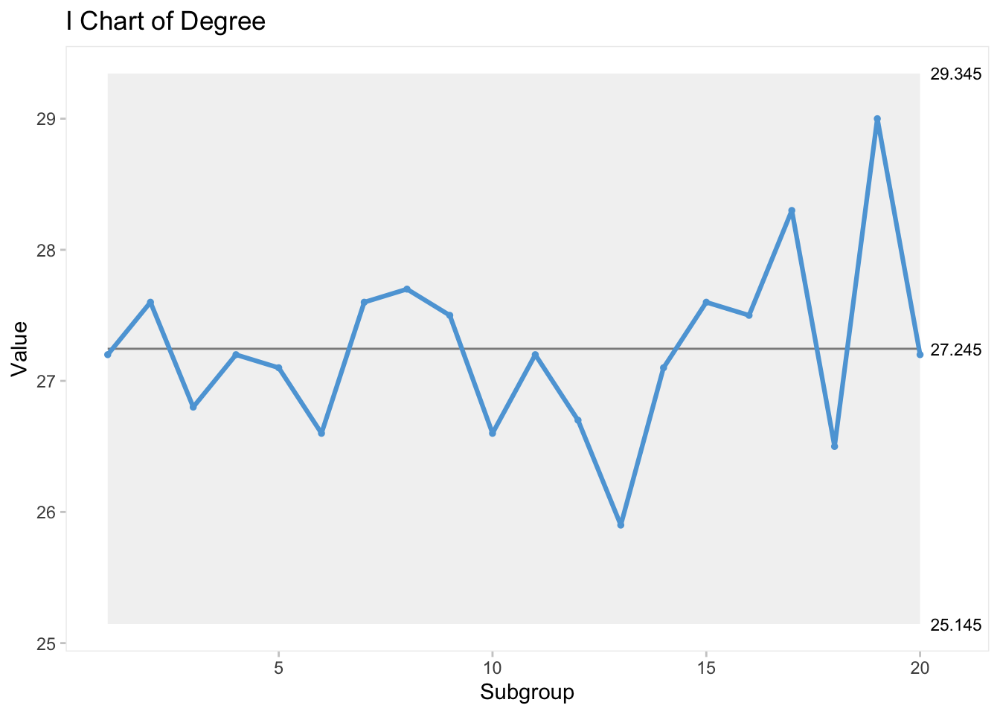
## [1] 2.579## [1] 0.7895## [1] 0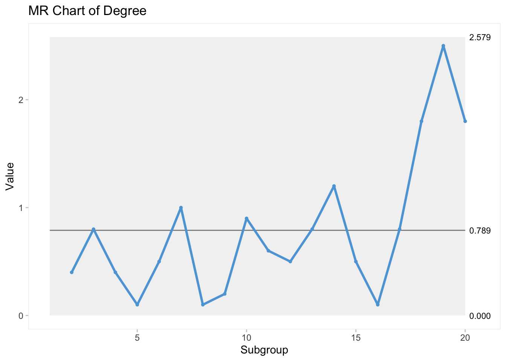
Kalite karakteristiğinin normallik varsayımı diyagramın hassasiyeti noktasında önem taşımaktadır. Analiz edilen veri setinin dağılımı incelenmeli ve normallik sağlanmıyorsa ilgili dönüşüm yapılarak inceleme sürecine devam edilmelidir. Özellikle I ve MR diyagramları normallikten sapmalara oldukça duyarlıdır.
Örnek 2: Bir bankanın ipotek kredisi işleme birimi, kredi başvurularının işleme alınma maliyetlerini izler. İzlenen miktar, toplam haftalık maliyetlerin hafta boyunca işlenen kredi sayısına bölünmesiyle elde edilen ortalama haftalık işlem maliyetleridir. Son 20 haftanın işlem maliyetleri Tablo 6.6’da gösterilmektedir. Bu veriler için I (bireysel) ve MR (hareketli aralık) kontrol diyagramlarını çiziniz.
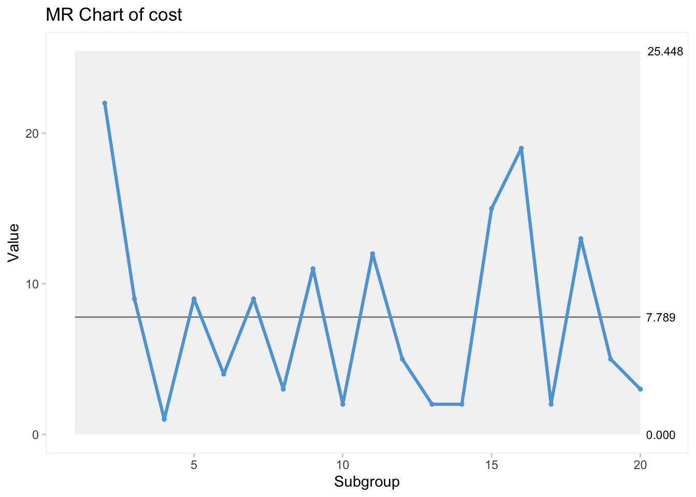
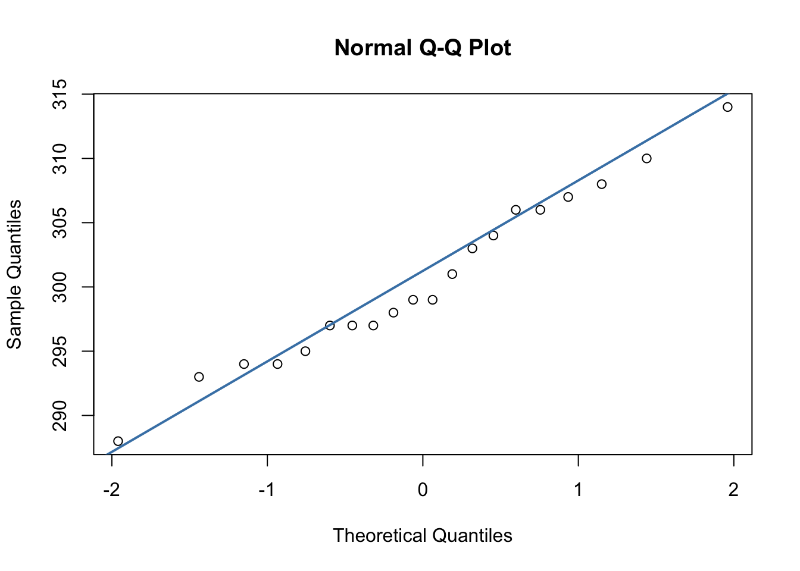
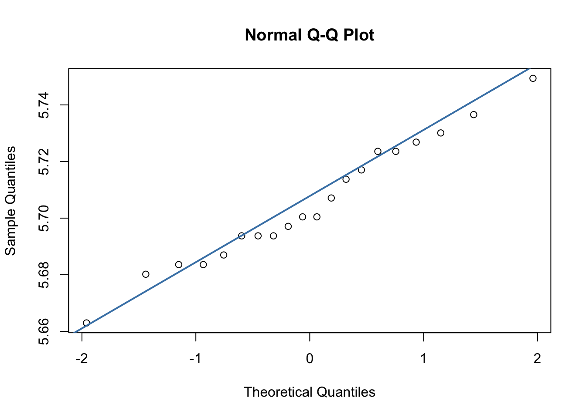
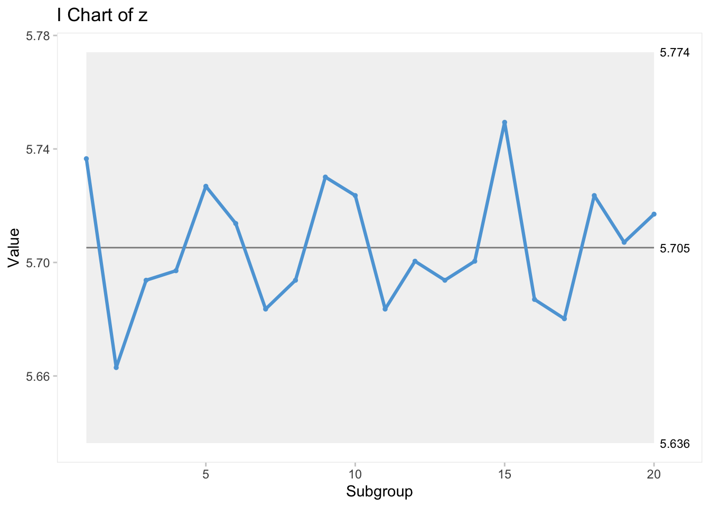
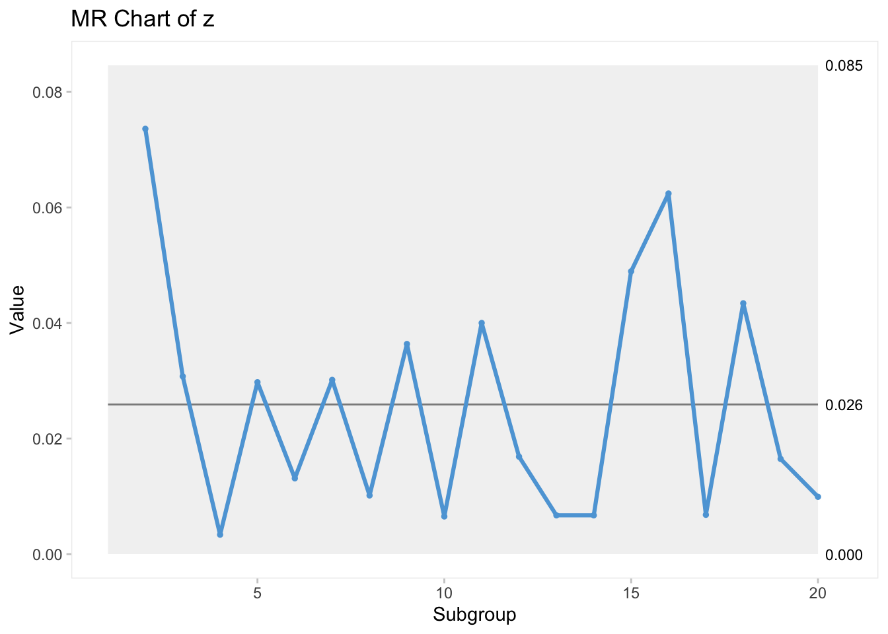
cost değişkenini farklı kontrol limitlerinde gözlemlemek de mümkündür. I kontrol diyagramının \(\pm1\sigma\), \(\pm2\sigma\) ve \(\pm3\sigma\) versiyonlarının aynı diyagram üzerinde gözlenen hali aşağıda yer almaktadır.
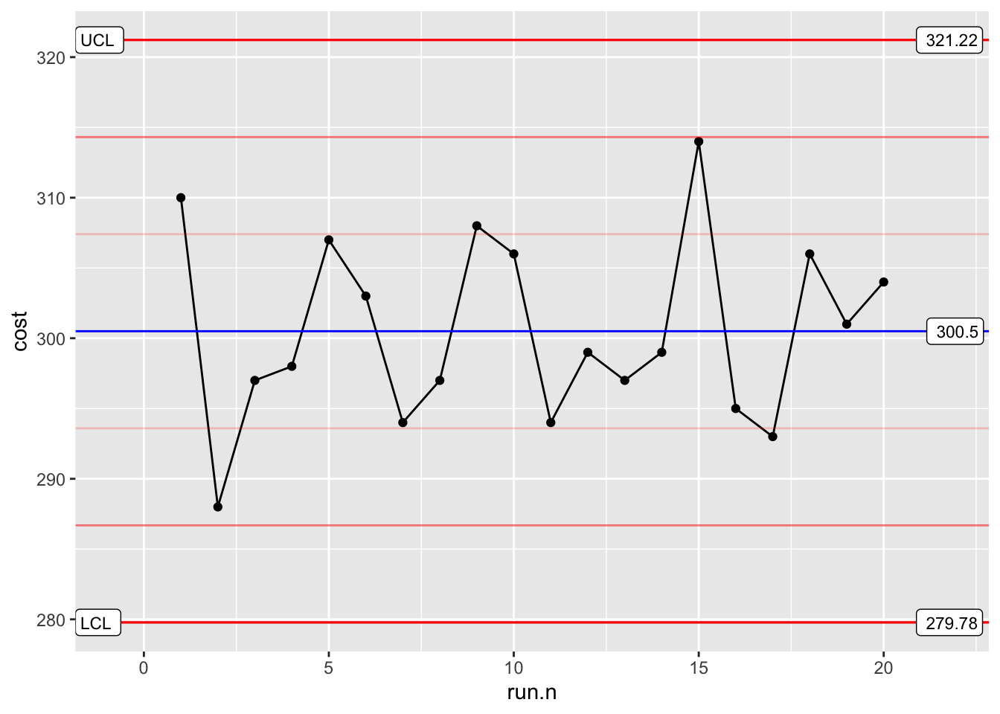
Benzer şekilde farklı varyasyonları aynı diyagram üzerinde değil ayrı ayrı ve yan yana kıyaslama imkanı gözlem açısından faydalı olacaktır.
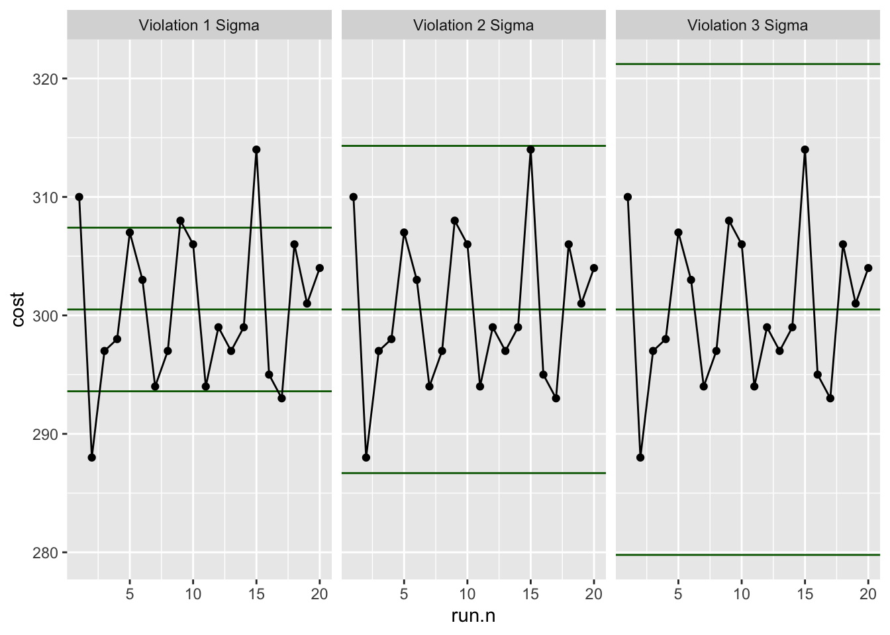
8.2 X-R Kontrol Diyagramları
İlgilenilen kalite karakteristiğinin \(\mu\) ortalama ve \(\sigma\) standart sapma ile normal dağıldığı varsayılmaktadır.
Uygulamada \(\mu\) ve \(\sigma\) bilinememektedir. Bu nedenle, sürecin kontrol altında olup olmadığı alınan ön numunelerin veya alt grupların tahmin sonuçlarına bağlı olarak değerlendirilir. Bu değerlendirme için en az 20-25 örneklem çekilmelidir. \(m\) örnek çekildiği ve her birinin \(n\) gözlem içerdiği varsayılsın, \(n\) genellikle 4, 5 veya 6 gözlem içerecektir. Küçük n değerinin nedeni genellikle prosesde meydana gelen örnekleme maliyeti ve zaman kaybıdır.
Burada \(x_{1},x_{2},...,x_{n}\) ise \(n\) büyüklüğünde örneklem ise bu örneklemin ortalaması;
\(\bar{x}=(x_{1}+x_{2}+...+x_{n})/n\)
\(\bar{x}_{1},\bar{x}_{2},...,\bar{x}_{m}\) her bir örneklemin ortalaması olmak üzere \(\mu\)’nün en iyi tahmin edicisi proses ortalaması;
\(\bar{\bar{x}}=(\bar{x}_{1}+\bar{x}_{2}+...+\bar{x}_{m})/m\)
Böylece, \(\bar{\bar{x}}\), \(\bar{x}\) diyagramı için CL olarak kullanılabilir.
Kontrol limitlerinin elde edilmesi için \(\sigma\)’nın tahminine ihtiyaç duyulur ve bu bakımdan range bilgisinden yararlanılır.
\(R=x_{max}-x_{min}\)
m örneklem için \(R_{1},R_{2},...,R_{m}\) elde edilir. Buradan ortalama range değeri;
\(\bar{R}=(R_{1}+R_{2}+...+R_{m})/m\)
elde edilir.
\(\bar{x}\) kontrol diyagramı için LCL, CL ve UCL aşağıdaki formüller yardımı ile hesaplanabilir.
\(UCL=\bar{\bar{x}}+A_{2}\bar{R}\)
\(CL=\bar{\bar{x}}\)
\(LCL=\bar{\bar{x}}-A_{2}\bar{R}\)
Not3: Teoride \(A_{2}\) değeri \(d_{2}\) üzerinden elde edilmektedir.
\(A_{2}=\frac{3}{d_{2}\sqrt{n}}\)
\(R\) kontrol diyagramı için LCL, CL ve UCL aşağıdaki formüller yardımı ile hesaplanabilir.
\(UCL=D_{4}\bar{R}\)
\(CL=\bar{R}\)
\(LCL=D_{3}\bar{R}\)
Proses standart sapması için yansız tahmin edici;
\(\hat{\sigma}=\frac{\bar{R}}{d_{2}}\)
olarak hesaplanır.
\(\bar{x}\) ve \(R\) Diyagramlar Evre I (Phase I): Kontrol diyagramı kullanımında, \(\bar{x}\) ve \(R\) kontrol diyagramları oluşturmak için ön numuneler kullanıldığında, yukarıdaki eşitlikler yardımı ile elde edilen kontrol sınırlarının deneme kontrol sınırları olarak ele alınması gerekir. İlk numunelerın seçilerek prosesin kontrol altında olup olmadığının incelendiği bu evre I. evre olarak adlandırılır.
Tüm noktalar kontrol sınırları içinde işaretlenirse ve sistematik bir davranış yoksa, sürecin geçmişte kontrol altında olduğu ve deneme kontrol limitlerinin mevcut veya gelecekteki üretimi kontrol etmek için uygun olduğu sonucuna varılır. Deneme kontrol limitlerini hesaplamak için 20-25 numuneye veya n boyutunda (tipik olarak 3 ile 5 arası) alt gruba sahip olması istenir. Elbette daha az veriyle çalışılabilir ancak kontrol sınırlarının güvenilirliği dikkate alınmalıdır.
Deneme kontrol limitleri ile karşılaştırıldığında \(\bar{x}\) veya \(R\) değerlerinden birinin veya daha fazlasının kontrol dışı olduğunu varsayalım. Açıktır ki, mevcut veya gelecekteki üretim için kontrol sınırları anlamlı olacaksa, bunlar kontrol altında olan bir süreçten gelen verilere dayanmalıdır. Bu nedenle, geçmiş kontrol hipotezi reddedildiğinde, deneme kontrol limitlerinin revize edilmesi gerekir.
Bu aşamada kontrol dışı noktaların her biri incelenerek, özel değişkenliğin nedeni araştırılır. Özel bir neden bulunursa, nokta atılır ve deneme kontrol sınırları yalnızca kalan noktalar kullanılarak yeniden hesaplanır. Daha sonra bu kalan noktalar kontrol için yeniden incelenir. (Başlangıçta kontrol altında olan noktaların artık kontrolden çıkmış olabileceğini unutmayın, çünkü yeni deneme kontrol limitleri genellikle eskilere göre daha dar olacaktır.) Bu süreç, tüm noktalar kontrol altına alınana kadar sürdürülür.
Bazı durumlarda, kontrolden çıkan bir nokta için özel bir neden bulmak mümkün olmayabilir. Bu noktada uygulanabilecek iki yaklaşım mevcuttur. Bunlardan ilki, sanki özel bir neden bulunmuş gibi noktayı ortadan kaldırmaktır. Bu eylemi seçmek için analitik bir gerekçe yoktur, bunun dışında, kontrol sınırları dışında kalan noktaların, kontrol dışı bir durumun olasılık dağılım özelliğinden alınmış olması muhtemeldir. Alternatif yaklaşım ise noktayı (veya noktaları) korumaktır. Elbette, nokta gerçekten kontrol dışı bir durumu temsil ediyorsa, ortaya çıkan kontrol sınırları çok geniş olacaktır. Ancak, bu tür yalnızca bir veya iki nokta varsa, bu, kontrol grafiğini önemli ölçüde bozmayacaktır. Gelecekteki numuneler hala kontrolü gösteriyorsa, açıklanamayan noktalar muhtemelen güvenli bir şekilde bırakılabilir.
Bazı durumlarda, \(\bar{x}\) ve \(R\) diyagramları için ilk örnek değerleri deneme kontrol sınırlarına göre işaretlendiğinde, birçok nokta kontrol dışı kalacaktır. Açıktır ki, kontrol dışı noktalar keyfi olarak analiz dışı bırakılırsa güvenilir kontrol limitlerinin yeniden hesaplayabileceği çok az veri kalacaktır.
Ayrıca, bu yaklaşım ile verideki yararlı bilgilerin göz ardı edilmesi de söz konusudur. Öte yandan, her bir kontrol dışı nokta için özel bir neden aramak da sürdürülebilir bir teknik olmayacaktır. Bu bakımdan kontrol limitleri dışında kalan veriler için ortaya çıkan desen ile ilgilenmek ve bu yapıyı belirlemek kullanışlı olmaktadır. Kontrol dışı noktaların modeliyle ilişkili özel nedenin belirlenmesi oldukça kolaydır ve bu sorununun ortadan kaldırılması genellikle büyük bir süreç iyileştirmesi ile sonuçlanmaktadır.
Revize (LCL, UCL ve CL): Herhangi bir kontrol diyagramının etkin kullanımı, kontrol limitlerinin ve merkez hatlarının periyodik olarak revize edilmesini gerektirecektir. Bazı uygulayıcılar, her hafta, her ay veya her 25, 50 veya 100 numunede bir gibi kontrol tablosu limitlerinin gözden geçirilmesi ve revizyonu için düzenli periyotlar belirler. Kontrol limitlerini gözden geçirirken, kontrol limitlerinin hesaplanmasında en az 25 örnek veya alt grup (bazı otoriteler 200-300 ayrı gözlem önermektedir) kullanılmasının oldukça arzu edildiğini unutmayın.
\(\bar{x}\) ve \(R\) Diyagramlar Evre II (Phase II): Bir dizi güvenilir kontrol limiti oluşturulduktan sonra, gelecekteki üretimi izlemek için kontrol diyagramını kullanılır, bu aşama evre II olarak adlandırılır.
Örnek 1: Bir makine parçası üretiminde kama mili derinliği (mm) ile ilgili elde edilen ölçüm sonuçlarını içermektedir. Ölçümler, farklı zamanlarda üretilen 25 partiden 4 örnek alınarak gerçekleştirilmiştir. X-R kontrol diyagramını çizerek, prosesin istatistiksel olarak kontrol altında olup olmadığını analiz ediniz.
Kontrol diyagramı için hesaplanması gereken değerlerden ilki \(\bar{\bar{x}}\),
## [1] 6.360 6.400 6.360 6.650 6.390 6.400 6.430 6.370 6.460 6.420 6.390 6.380
## [13] 6.400 6.410 6.450 6.340 6.360 6.420 6.377 6.510 6.400 6.390 6.390 6.380
## [25] 6.410## [1] 6.41İhtiyaç duyulacak diğer bir değer \(\bar{R}\)
## [1] 0.0876X kontrol diyagramı için CL, UCL ve LCL;
## [1] 6.41
## [1] 6.474## [1] 6.346R kontrol diyagramı için CL, UCL ve LCL;
## [1] 0.0876
## [1] 0.1999## [1] 0Mil Derinliği \(\bar{X}\) Kontrol Diyagramı

## List of 11
## $ call : language qcc(data = xs, type = "xbar")
## $ type : chr "xbar"
## $ data.name : chr "xs"
## $ data : num [1:25, 1:4] 6.35 6.46 6.34 6.69 6.38 6.42 6.44 6.33 6.48 6.47 ...
## ..- attr(*, "dimnames")=List of 2
## $ statistics: Named num [1:25] 6.36 6.4 6.36 6.65 6.39 6.4 6.43 6.37 6.46 6.42 ...
## ..- attr(*, "names")= chr [1:25] "1" "2" "3" "4" ...
## $ sizes : int [1:25] 4 4 4 4 4 4 4 4 4 4 ...
## $ center : num 6.41
## $ std.dev : num 0.0425
## $ nsigmas : num 3
## $ limits : num [1, 1:2] 6.35 6.47
## ..- attr(*, "dimnames")=List of 2
## $ violations:List of 2
## - attr(*, "class")= chr "qcc"\(\bar{X}\) diyagramı incelendiğinde; 4, 16 ve 20 numaralı alt grupların kontrol dışı olduğu gözlenmektedir. Prosesin istatistiksel olarak kontrol altında olmadığı ve varyasyonun özel bir nedeninin olduğu sonucuna varılmaktadır. Bu noktada varyasyona neden olan faktörler incelenerek ortadan kaldırılmalıdır.
Mil Derinliği \(R\) Kontrol Diyagramı
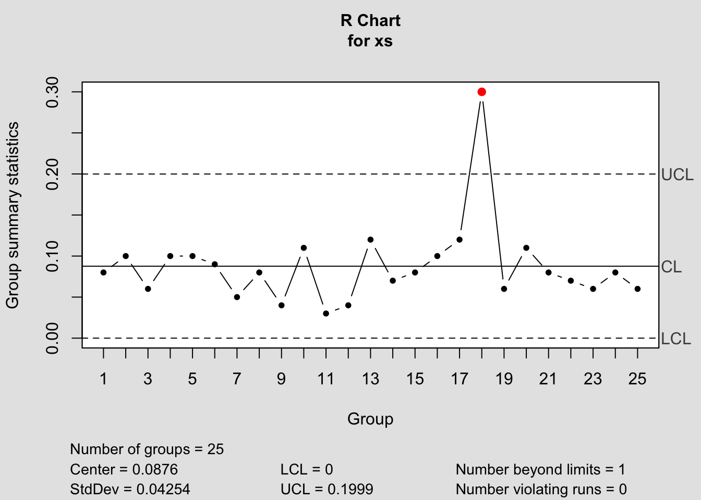
## List of 11
## $ call : language qcc(data = xs, type = "R")
## $ type : chr "R"
## $ data.name : chr "xs"
## $ data : num [1:25, 1:4] 6.35 6.46 6.34 6.69 6.38 6.42 6.44 6.33 6.48 6.47 ...
## ..- attr(*, "dimnames")=List of 2
## $ statistics: Named num [1:25] 0.08 0.1 0.06 0.1 0.1 ...
## ..- attr(*, "names")= chr [1:25] "1" "2" "3" "4" ...
## $ sizes : int [1:25] 4 4 4 4 4 4 4 4 4 4 ...
## $ center : num 0.0876
## $ std.dev : num 0.0425
## $ nsigmas : num 3
## $ limits : num [1, 1:2] 0 0.2
## ..- attr(*, "dimnames")=List of 2
## $ violations:List of 2
## - attr(*, "class")= chr "qcc"\(R\) diyagramı incelendiğinde; 18 numaralı alt grupların kontrol dışı olduğu gözlenmektedir. Prosesin istatistiksel olarak kontrol altında olmadığı ve varyasyonun özel bir nedeninin olduğu sonucuna varılmaktadır. Bu noktada varyasyona neden olan faktörler incelenerek ortadan kaldırılmalıdır.
İlk olarak \(R\) diyagramındaki kontrol dışı noktalar analiz edilmektedir. Bu analiz sonucunda 18 numaralı alt gruptaki kontrol dışı noktanın hasarlı yağ hattından kaynaklandığı tespit edilmiştir.
\(\bar{X}\) diyagramı analiz edildiğinde 4 ve 20 numaralı alt gruplardaki kontrol dışı noktaların nedeni belirlenmiştir. 4 numaralı alt grupta oluşan kontrol dışılık, yeni ve geçici çalışan operatörün yanlış ölçümünden ve 20 numaralı alt grupta görülen kontrol dışı noktanın kötü malzemeden kaynaklandığı saptanmıştır. 16 numaralı alt grupta söz konusu olan kontrol dışılığın nedeni işletme tarafından tespit edilememiştir ve rassal nedenlerden dolayı oluşan doğal değişkenliğin bir parçası olduğu varsayılmıştır.
\(\bar{X}\) ve \(R\) diyagramları incelendikten sonra kontrol limitleri dışında gözlenen özel değişkenlik kaynağı gruplar çıkartılarak limitler tekrar belirlenir.
8.3 Alt Grup Kavramı ve Örneklem Büyüklüğünün Belirlenmesi
X-R kontrol diyagramları ile ilgili örneklerden görülebileceği gibi alt grup örnekleri, zamanın belli bir anında ya da periyodunda üretilen ürün ya da hizmetlerden seçilmektedir. Alt grup içindeki değişkenlik, kontrol limitlerini belirlemede kullanılırken, alt gruplar arasındaki değişkenlik uzun dönemli kararlılığı değerlendirmede kullanılır.
Alt grup büyüklüğü arttıkça, kontrol limitleri merkez değerine daha yakın olacak ve proses ortalamasındaki küçük değişkenliklere kontrol diyagramı daha duyarlı hale gelecektir.
Alt grup büyüklüğü arttıkça, alt grup başına muayene maliyeti artar.
Tahribat veren test kullanıldığında ve öğe pahalı olduğunda, küçük bir alt grup gerekmektedir.
Örneklem büyüklüğünün belirlenmesi ile ilgili olarak ASQ tarafından aşağıdaki değerler önerilmiştir.
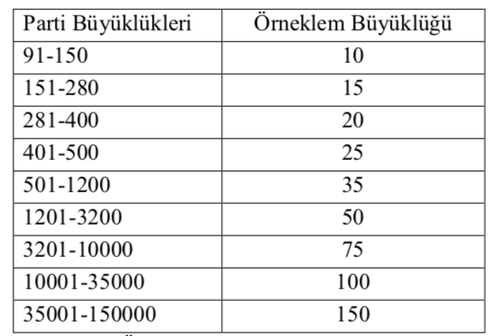
Bu tablo, parti büyüklüklerine bağlı olarak önerilen örneklem büyüklüğü değerlerini sunmaktadır. Eğer bir proses günlük 4000 parça üretiyorsa, 75 toplam muayene önerilir. Bu nedenle alt grup büyüklüğü 4 ile 19 alt grup iyi bir başlangıç noktası olacaktır.
8.4 Kontrol Dışı Olma Durumu
Bir nokta (alt grup değeri) kontrol limitleri dışına düştüğünde, proses kontrol dışındadır. Noktalar \(\pm3\sigma\) sınırları içine düştüğünde de, bir proseste kontrol dışılık söz konusu olabilir. Ölçülebilir değişkenler için kullanılan kontrol diyagramlarında aşağıda belirtilen 7 farklı kontrol testi de kullanılabilmektedir.
- Merkez çizgisinin aynı tarafında yer alan ardıl 9 nokta
- Sürekli artan ya da azalan 6 nokta
- Bir artıp bir azalan 14 nokta
- 3 ardıl noktadan 2’sinin aynı yönde \(\pm2\sigma\) aralığının dışında olması
- 5 noktadan 4’ünün aynı yönde \(\pm1\sigma\) aralığının dışında olması
- Merkez çizgisinin 1 standart sapma içinde 15 ardıl nokta olması
- Merkez çizgisinin \(\pm1\sigma\) aralığının dışında 8 nokta olması
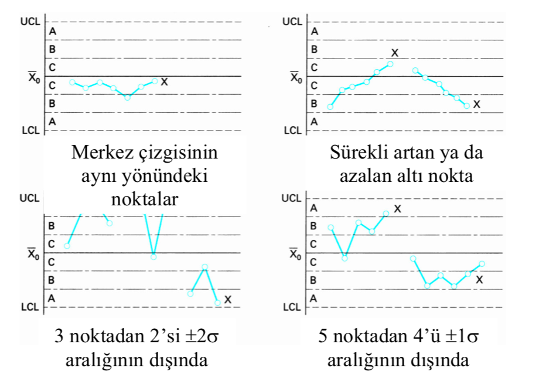
Benzer şekilde, ölçüm değerlerinde bir trend, sürekli değişim, tekrarlı çevrimler ya da kümeleme görülmesi durumunda da kontrol dışılık durumundan söz edilmelidir.
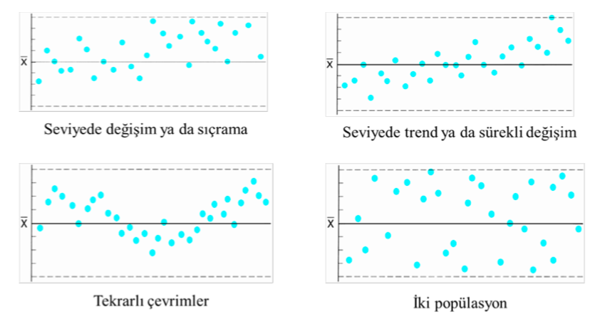
Kontrol dışılık durumunun yanlış değerlendirilmesi sonucu istatistiksel kalite kontrolde aşağıdaki gibi iki tip hata oluşacaktır.
Tip I, Gerçekte olağan bir neden olduğunda, özel bir neden olarak değerlendirme
Tip II, Gerçekte değişkenliğin özel bir nedeni olduğunda olağan bir neden olarak değerlendirme
8.5 X-S Kontrol Diyagramları
X-R kontrol diyagramları ölçülebilir değişkenler için en yaygın kullanılan diyagramlar olmalarına rağmen, bazı organizasyonlar alt grup yayılımının ölçüsü olarak örneklem standart sapmasını (s) tercih etmektedir. Bir s diyagramı ile bir R diyagramı karşılaştırıldığında, R diyagramının hesaplamaları ve açıklanması daha kolaydır. Diğer taraftan, R grafiğinde alt grupların en yüksek ve en düşük değerleri kullanılırken, s diyagramında tüm veri kullanılarak alt grup standart sapması hesaplanır. Bu nedenle, bir s diyagramı bir R diyagramından daha doğrudur. Alt grup büyüklüğü küçük olduğunda, her iki kontrol diyagramı grafiksel olarak benzer değişkenliği ortaya koymaktadır. Bununla birlikte, alt grup büyüklüğü 10 veya 12 den daha fazla olduğunda, ekstrem değerler R grafiği üzerinde aşırı etkiye sahip olacaktır. Bu nedenle büyük alt grup durumunda s diyagramı kullanılmalıdır.
X kontrol diyagramları yığın ortalamasındaki değişimi bulmak için tasarlanmıştır. Yığın varyansındaki olası değişimlerin araştırıldığı durumlarda ise S kontrol diyagramı kullanılmaktadır.
\(X\) kontrol diyagramı için LCL, CL ve UCL aşağıdaki formüller yardımı ile hesaplanabilir.
\(UCL=\bar{\bar{x}}+A_{3}\bar{s}\)
\(CL=\bar{\bar{x}}\)
\(LCL=\bar{\bar{x}}-A_{3}\bar{s}\)
Not1: Teoride \(A_{3}\) değeri ve \(n\)’e bağlı bir katsayı olan \(c_{4}\) üzerinden elde edilmektedir.
\(A_{3}=3/(c_{4}\sqrt{n})\)
\(S\) kontrol diyagramı için LCL, CL ve UCL aşağıdaki formüller yardımı ile hesaplanabilir.
\(UCL=B_{4}\bar{s}\)
\(CL=\bar{s}\)
\(LCL=B_{3}\bar{s}\)
Not2: Teoride \(B_{5}\), \(B_{6}\), \(B_{3}\) ve \(B_{4}\) değerleri aşağıdaki eşitlikler yardımıyla elde edilmektedir.
\(B_{5}=c_{4}-3\sqrt{1-c^{2}_{4}}\)
\(B_{6}=c_{4}+3\sqrt{1-c^{2}_{4}}\)
\(B_{4}=B_{6}/c_{4}\)
\(B_{3}=B_{5}/c_{4}\)
Örneklem standart sapmasını hatırlayalım;

Proses standart sapması için yansız tahmin edici;
\(\hat{\sigma}=\bar{s}/c_{4}\)
olarak hesaplanır.
Örnek 1: Bir makine parçası üretiminde kama mili derinliği (mm) ile ilgili elde edilen ölçüm sonuçlarını içermektedir. Ölçümler, farklı zamanlarda üretilen 25 partiden 4 örnek alınarak gerçekleştirilmiştir. X-R kontrol diyagramını çizerek, prosesin istatistiksel olarak kontrol altında olup olmadığını analiz ediniz.
Mil Derinliği \(\bar{X}\) Kontrol Diyagramı
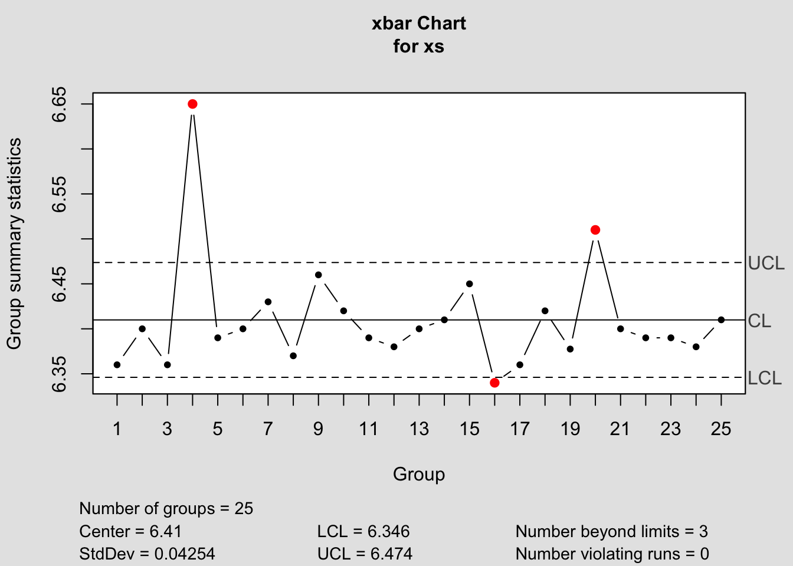
## List of 11
## $ call : language qcc(data = xs, type = "xbar")
## $ type : chr "xbar"
## $ data.name : chr "xs"
## $ data : num [1:25, 1:4] 6.35 6.46 6.34 6.69 6.38 6.42 6.44 6.33 6.48 6.47 ...
## ..- attr(*, "dimnames")=List of 2
## $ statistics: Named num [1:25] 6.36 6.4 6.36 6.65 6.39 6.4 6.43 6.37 6.46 6.42 ...
## ..- attr(*, "names")= chr [1:25] "1" "2" "3" "4" ...
## $ sizes : int [1:25] 4 4 4 4 4 4 4 4 4 4 ...
## $ center : num 6.41
## $ std.dev : num 0.0425
## $ nsigmas : num 3
## $ limits : num [1, 1:2] 6.35 6.47
## ..- attr(*, "dimnames")=List of 2
## $ violations:List of 2
## - attr(*, "class")= chr "qcc"Mil Derinliği \(\bar{S}\) Kontrol Diyagramı
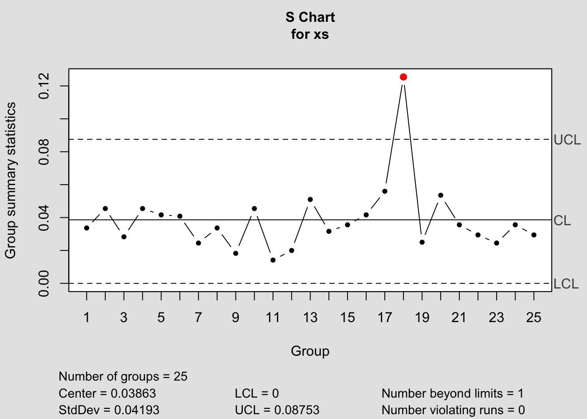
## [1] 0.04193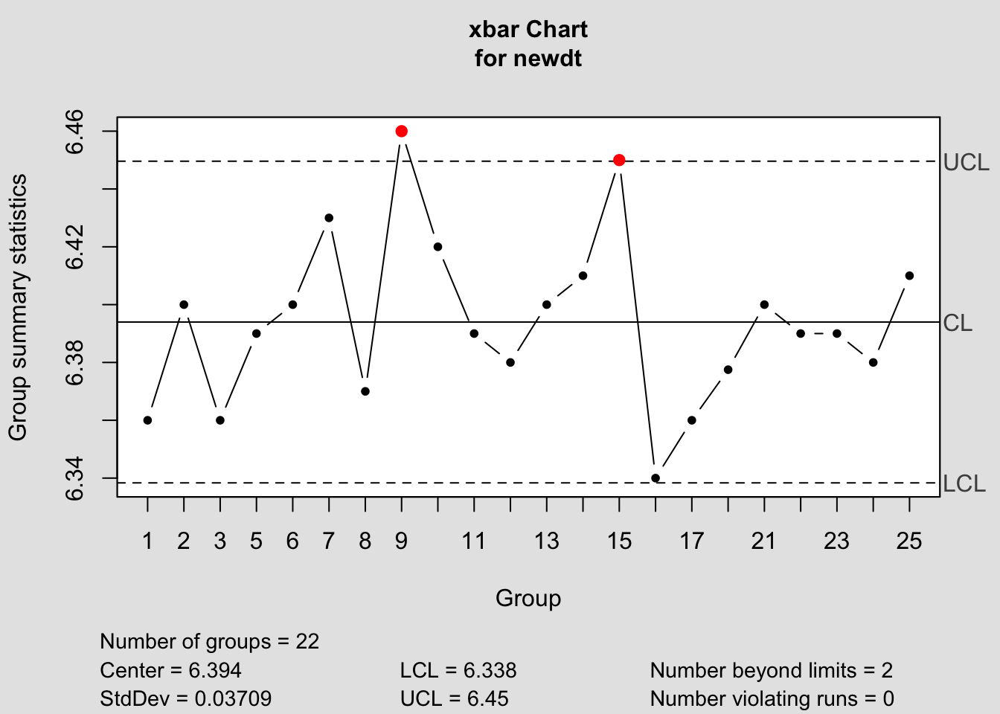
## List of 11
## $ call : language qcc(data = newdt, type = "xbar")
## $ type : chr "xbar"
## $ data.name : chr "newdt"
## $ data : num [1:22, 1:4] 6.35 6.46 6.34 6.38 6.42 6.44 6.33 6.48 6.47 6.38 ...
## ..- attr(*, "dimnames")=List of 2
## $ statistics: Named num [1:22] 6.36 6.4 6.36 6.39 6.4 6.43 6.37 6.46 6.42 6.39 ...
## ..- attr(*, "names")= chr [1:22] "1" "2" "3" "5" ...
## $ sizes : Named int [1:22] 4 4 4 4 4 4 4 4 4 4 ...
## ..- attr(*, "names")= chr [1:22] "1" "2" "3" "5" ...
## $ center : num 6.39
## $ std.dev : num 0.0371
## $ nsigmas : num 3
## $ limits : num [1, 1:2] 6.34 6.45
## ..- attr(*, "dimnames")=List of 2
## $ violations:List of 2
## - attr(*, "class")= chr "qcc"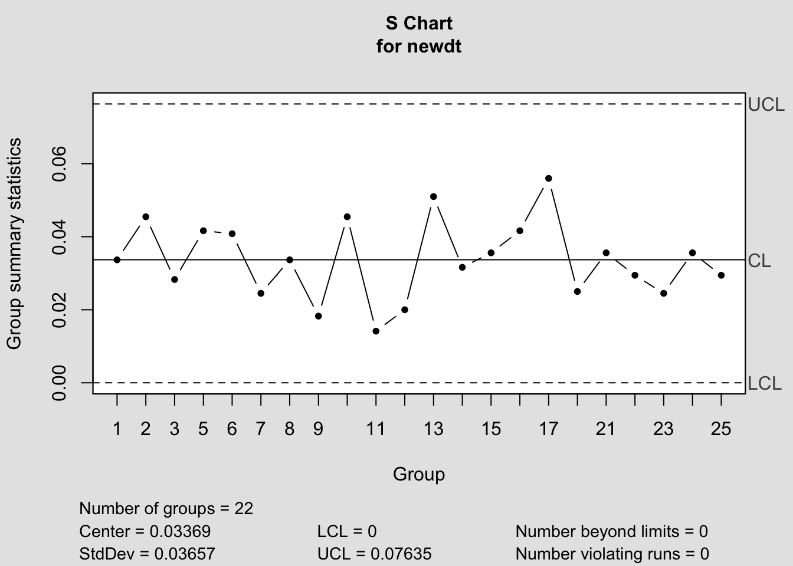
## List of 11
## $ call : language qcc(data = newdt, type = "S")
## $ type : chr "S"
## $ data.name : chr "newdt"
## $ data : num [1:22, 1:4] 6.35 6.46 6.34 6.38 6.42 6.44 6.33 6.48 6.47 6.38 ...
## ..- attr(*, "dimnames")=List of 2
## $ statistics: Named num [1:22] 0.0337 0.0455 0.0283 0.0416 0.0408 ...
## ..- attr(*, "names")= chr [1:22] "1" "2" "3" "5" ...
## $ sizes : Named int [1:22] 4 4 4 4 4 4 4 4 4 4 ...
## ..- attr(*, "names")= chr [1:22] "1" "2" "3" "5" ...
## $ center : num 0.0337
## $ std.dev : num 0.0366
## $ nsigmas : num 3
## $ limits : num [1, 1:2] 0 0.0764
## ..- attr(*, "dimnames")=List of 2
## $ violations:List of 2
## - attr(*, "class")= chr "qcc"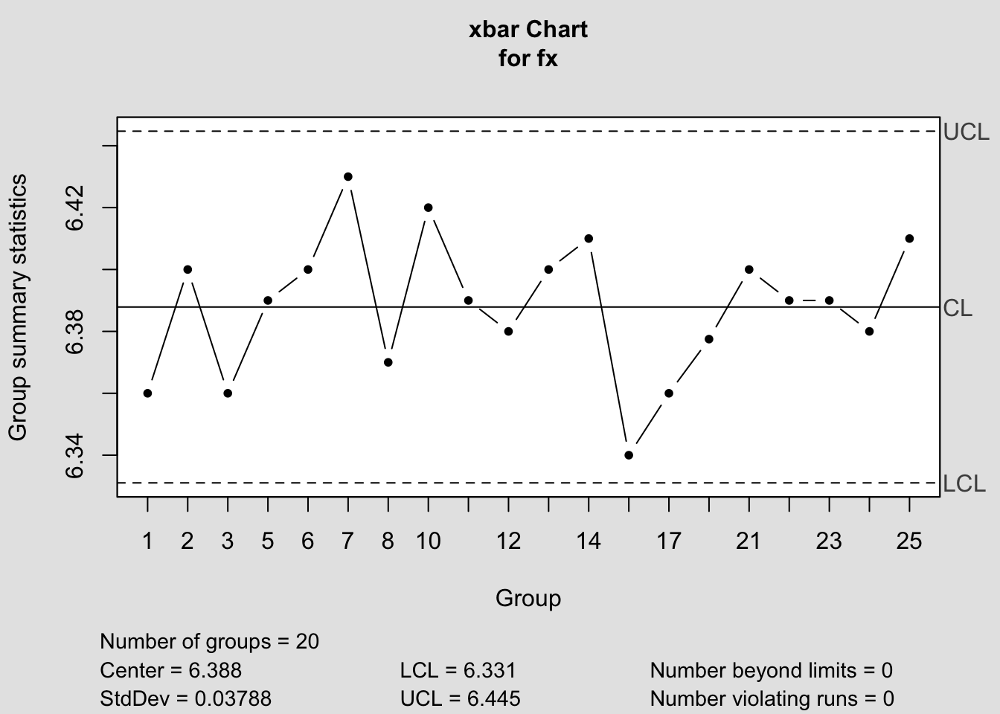
## List of 11
## $ call : language qcc(data = fx, type = "xbar")
## $ type : chr "xbar"
## $ data.name : chr "fx"
## $ data : num [1:20, 1:4] 6.35 6.46 6.34 6.38 6.42 6.44 6.33 6.47 6.38 6.37 ...
## ..- attr(*, "dimnames")=List of 2
## $ statistics: Named num [1:20] 6.36 6.4 6.36 6.39 6.4 6.43 6.37 6.42 6.39 6.38 ...
## ..- attr(*, "names")= chr [1:20] "1" "2" "3" "5" ...
## $ sizes : Named int [1:20] 4 4 4 4 4 4 4 4 4 4 ...
## ..- attr(*, "names")= chr [1:20] "1" "2" "3" "5" ...
## $ center : num 6.39
## $ std.dev : num 0.0379
## $ nsigmas : num 3
## $ limits : num [1, 1:2] 6.33 6.44
## ..- attr(*, "dimnames")=List of 2
## $ violations:List of 2
## - attr(*, "class")= chr "qcc"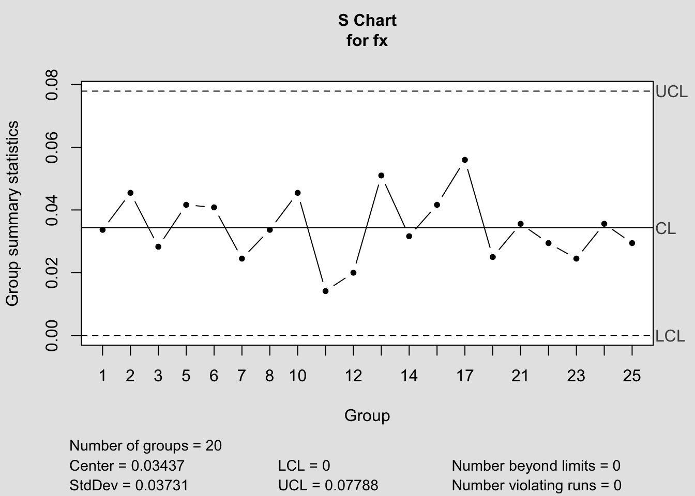
## List of 11
## $ call : language qcc(data = fx, type = "S")
## $ type : chr "S"
## $ data.name : chr "fx"
## $ data : num [1:20, 1:4] 6.35 6.46 6.34 6.38 6.42 6.44 6.33 6.47 6.38 6.37 ...
## ..- attr(*, "dimnames")=List of 2
## $ statistics: Named num [1:20] 0.0337 0.0455 0.0283 0.0416 0.0408 ...
## ..- attr(*, "names")= chr [1:20] "1" "2" "3" "5" ...
## $ sizes : Named int [1:20] 4 4 4 4 4 4 4 4 4 4 ...
## ..- attr(*, "names")= chr [1:20] "1" "2" "3" "5" ...
## $ center : num 0.0344
## $ std.dev : num 0.0373
## $ nsigmas : num 3
## $ limits : num [1, 1:2] 0 0.0779
## ..- attr(*, "dimnames")=List of 2
## $ violations:List of 2
## - attr(*, "class")= chr "qcc"Gözlem sayısı her alt grupta aynı değilse?
X-R kontrol diyagramlarında alt grup örneklem büyüklükleri (n) aynı olmadığında \(\bar{\bar{x}}\) ve \(\bar{s}\) hesaplaması aşağıdaki ağırlıklı ortalama yaklaşımı kullanılarak hesaplanır ve ardından kontrol limitleri elde edilir.
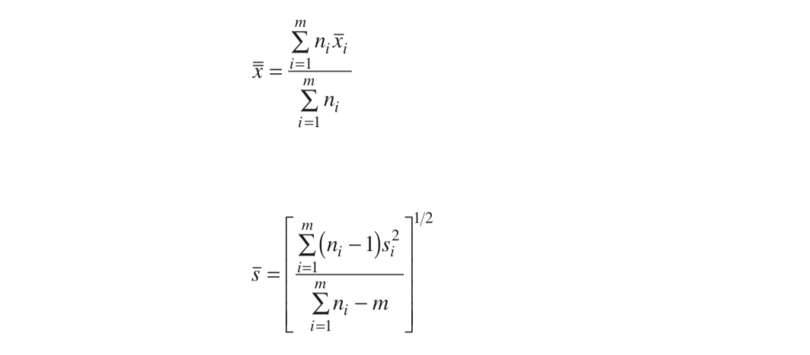

Alt grup gözlem sayısının farklı olması durumunda proses standart sapması için yansız tahmin edici hesabı da farklılaşmaktadır. n sayısına bağlı olarak hesaplama yapılması gerektiğinden, her bir n sayısı için \(\bar{s}\) hesaplanır, ardından ilgili n değerine bağlı \(c_{4}\) değeri belirlenir ve
\(\hat{\sigma}=\bar{s}/c_{4}\)
hesaplanır, örneğin alt grup büyüklüğü n=3,4 olan bir veri için n=3 ve n=4 için iki defa hesaplama yapılmalıdır.
## diameter sample trial
## 1 74.03 1 TRUE
## 2 74.00 1 TRUE
## 3 74.02 1 TRUE
## 4 73.99 1 TRUE
## 5 74.01 1 TRUE
## 6 74.00 2 TRUEdiameter = with(pistonrings, qcc.groups(diameter, sample))
DT::datatable(diameter,options = list(
columnDefs = list(list(className = 'dt-center', targets = 0:5))
))out = c(9, 10, 30, 35, 45, 64, 65, 74, 75, 85, 99, 100)
diameter2 = with(pistonrings, qcc.groups(diameter[-out], sample[-out]))
DT::datatable(diameter2,options = list(
columnDefs = list(list(className = 'dt-center', targets = 0:5))
))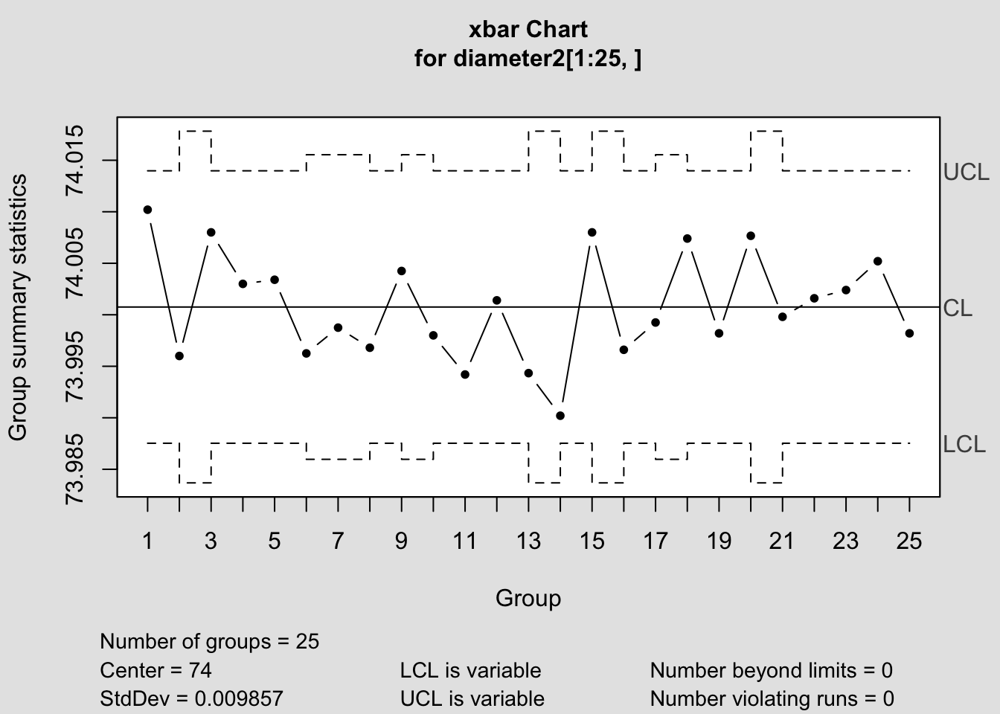
##
## Call:
## qcc(data = diameter2[1:25, ], type = "xbar")
##
## xbar chart for diameter2[1:25, ]
##
## Summary of group statistics:
## Min. 1st Qu. Median Mean 3rd Qu. Max.
## 73.99 74.00 74.00 74.00 74.00 74.01
##
## Summary of group sample sizes:
## sizes 3 4 5
## counts 4 4 17
##
## Number of groups: 25
## Center of group statistics: 74
## Standard deviation: 0.009857
##
## Control limits:
## LCL UCL
## 73.99 74.01
## 73.98 74.02
## ...
## 73.99 74.01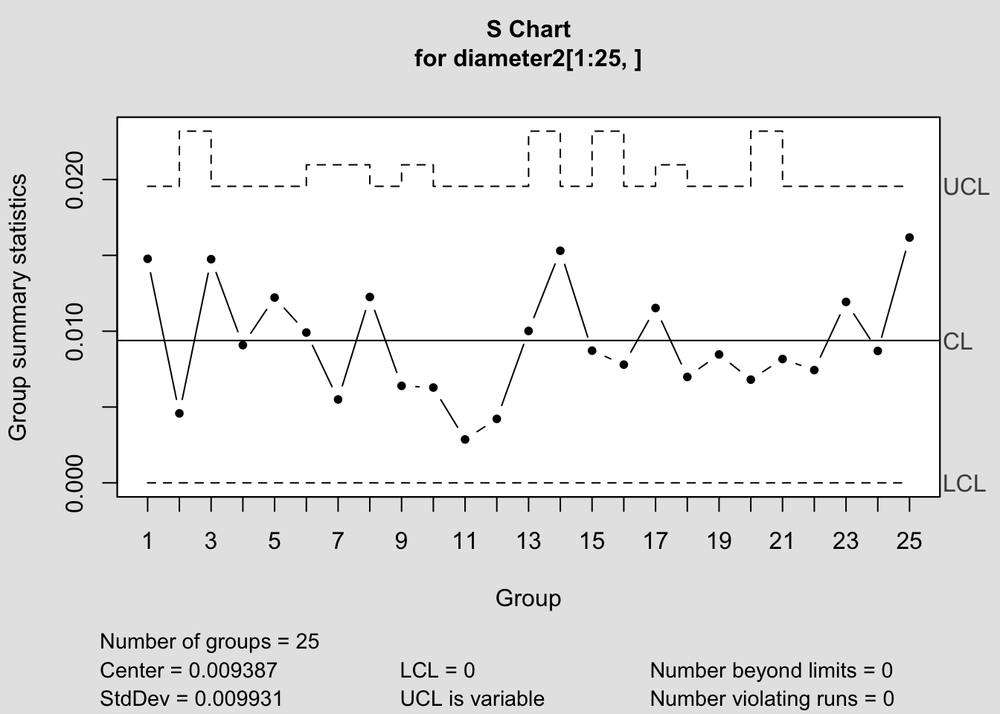
## List of 11
## $ call : language qcc(data = diameter2[1:25, ], type = "S")
## $ type : chr "S"
## $ data.name : chr "diameter2[1:25, ]"
## $ data : num [1:25, 1:5] 74 74 74 74 74 ...
## ..- attr(*, "dimnames")=List of 2
## $ statistics: Named num [1:25] 0.01477 0.00458 0.01475 0.00908 0.01222 ...
## ..- attr(*, "names")= chr [1:25] "1" "2" "3" "4" ...
## $ sizes : Named int [1:25] 5 3 5 5 5 4 4 5 4 5 ...
## ..- attr(*, "names")= chr [1:25] "1" "2" "3" "4" ...
## $ center : num 0.00939
## $ std.dev : num 0.00993
## $ nsigmas : num 3
## $ limits : num [1:25, 1:2] 0 0 0 0 0 0 0 0 0 0 ...
## ..- attr(*, "dimnames")=List of 2
## $ violations:List of 2
## - attr(*, "class")= chr "qcc"## LCL UCL
## 0 0.01955
## 0 0.02319
## 0 0.01955
## 0 0.01955
## 0 0.01955
## 0 0.02097
## 0 0.02097
## 0 0.01955
## 0 0.02097
## 0 0.01955
## 0 0.01955
## 0 0.01955
## 0 0.02319
## 0 0.01955
## 0 0.02319
## 0 0.01955
## 0 0.02097
## 0 0.01955
## 0 0.01955
## 0 0.02319
## 0 0.01955
## 0 0.01955
## 0 0.01955
## 0 0.01955
## 0 0.01955